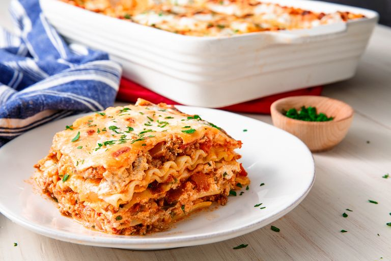

lasagna Recipe
- 3/4 lb.lasagna noodles
- 1 tsp.extra-virgin olive oil, plus more for drizzling
- 1 lb.ground beef
- 2 cloves garlic, minced
- 1 tsp.dried oregano
- Kosher salt
- Freshly ground black pepper
- 1(32-0z.) jar marinara
- 16 oz. whole milk ricotta
- 1/2 c. freshly grated Parmesan, divided
- 1/4 c.chopped parsley, plus more for garnish
- 1 1/2 lb.sliced mozzarella
- Preheat oven to 375º. In a large pot of salted boiling water, cook pasta according to package directions until al dente, less 2 minutes. Drain and drizzle a bit of olive oil to prevent noodles from sticking together.
- Meanwhile, in a large pot over medium-high heat, heat oil. Cook ground beef until no longer pink, breaking up with a wooden spoon, then drain fat. Return beef to skillet and add garlic and oregano and stir for 1 minute. Season with salt and pepper, then add marinara and stir until warmed through.
- Combine ricotta, 1/4 cup Parmesan, and parsley in a large mixing bowl and season with salt and pepper. Set aside.
- In a large casserole dish, spread a thin layer of meat sauce, a single layer of lasagna noodles, a layer of ricotta mixture, and a single layer of mozzarella, then repeat layers. Top last layer of noodles with meat sauce, Parmesan, and mozzarella.
- Cover with foil and bake for 15 minutes, then increase temperature to 400º and bake uncovered for 18 to 20 minutes. Garnish with parsley and serve.